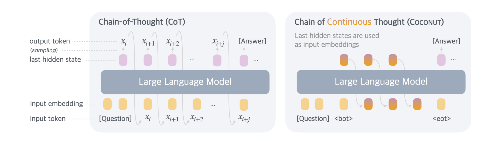

VQ-CoT: Discretising Latent Chain-of-Thought
Understanding what latent thoughts actually learn.
EPFL CS-552 Modern NLP · Spring 2026 · Final grade 6/6

Instead of spelling out every reasoning step as text tokens (left), latent chain-of-thought models like Coconut and CODI feed the LLM's own last hidden state back in as the next input embedding (right). The intermediate reasoning stays in a continuous space and is never emitted as text. The claim is that this gives richer, more efficient reasoning per step. Because the latents are opaque, that claim is rarely tested. We looked into it.

We push each latent thought through a VQ-VAE codebook before feeding it back to the LLM. If the model still answers correctly, the codebook entries tell us what content the latents actually carry. In parallel we probe the latents directly to see what they encode. The story is consistent: many of the latents are structured but content-free, and swapping or removing them barely changes the model's answer. The latent thoughts turn out to be a much thinner channel than the framing suggests.
The cause is the training objective. Both Coconut and CODI are supervised to reconstruct the original chain-of-thought text at the output, so the model has no choice but to route the answer through latents that preserve the surface form of natural-language reasoning, dataset delimiters included. The structure the latents carry is not a more efficient encoding of the problem; it is a compressed version of the written answer, artefacts and all. Latent chain-of-thought, as currently trained, is not learning to reason more efficiently, it is learning to compress natural language.